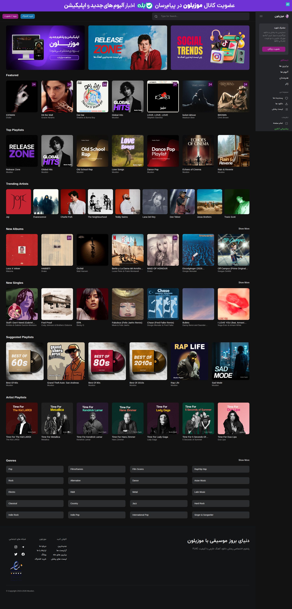

Musilon
توسعهدهندهی ارشد وردپرس روی Musilon — ساخت موتور اختصاصی ingest محتوا، اتوماسیون بازاریابی، و زیرساختی که پلتفرم استریم موسیقی رو مقیاسپذیر کرد.
مشاهده musilon.com →
توسعهدهندهی ارشد وردپرس روی Musilon — ساخت موتور اختصاصی ingest محتوا، اتوماسیون بازاریابی، و زیرساختی که پلتفرم استریم موسیقی رو مقیاسپذیر کرد.
مشاهده musilon.com →
زمینه
Musilon یک پلتفرم استریم موسیقی با کاتالوگ عظیمی از آلبوم، ترک، و متادیتای هنرمندانه. چالش اصلی مهندسی، ingest محتوا بود: چطور کاتالوگ رو در مقیاس بسازی بدون اینکه یک تیم ادیتور دستی پست بسازن؟ یک افزونهی اختصاصی ساختم که متادیتای آلبوم/ترک رو از API و web crawling میگرفت، نرمالایز میکرد، و ساختار کامل محتوا رو خودکار میساخت — ساخت پست تقریباً ۱۰۰ برابر سریعتر از روند دستی قبلی تیم.
در کنار موتور ingest، اتوماسیون بازاریابی روی n8n و Elasticsearch، یک لایهی اختصاصی محافظت دانلود، و مهاجرت از سرور اشتراکی به اختصاصی هم تحویل داده شد. همکاری ۲۰ ماه طول کشید.
تکنولوژی